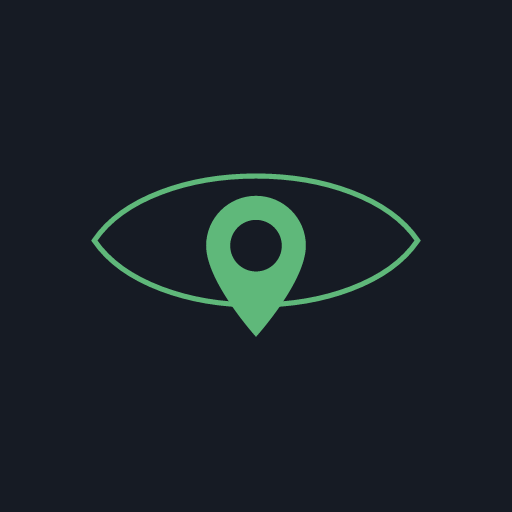

SIEMVISTPolítica de privacidade
Em uma frase: o Siemvist guarda tudo no seu dispositivo. O app não envia dados próprios a nenhum servidor, não tem contas de usuário, não exibe anúncios e não inclui ferramentas de análise nem de rastreamento.
1. O que o Siemvist faz
O Siemvist ajuda você a lembrar onde guarda suas coisas. Você fotografa um objeto, diz ou escreve onde ele está e, quando precisar, procura pelo nome ou por voz. Todo o processamento acontece no seu telefone.
2. Dados guardados no seu dispositivo
Estas informações existem apenas no armazenamento privado do app, no seu telefone. Nós não temos acesso a elas.
| Dado | Para que é usado |
|---|---|
| Fotos dos seus objetos | Identificar o objeto na lista e na busca. |
| Nome, lugar descrito por você, notas e etiquetas | Encontrar o objeto depois. O "lugar" é o texto que você digita ou dita; o app não usa GPS nem pede permissão de localização. |
| Lembretes | Mostrar notificações locais na data que você escolher. |
| Zona privada | Os objetos privados são protegidos por um PIN. Apenas um resumo criptográfico (hash) do PIN é guardado no armazenamento seguro do Android, nunca o PIN em texto claro. Se você usar impressão digital ou rosto, a verificação é feita pelo Android; o app não acessa seus dados biométricos. |
| Configurações e estado da compra Premium | Lembrar suas preferências e se você tem o Premium. |
3. Dados que o app envia
Nenhum. O Siemvist não envia suas fotos, textos, gravações nem qualquer outro dado próprio a servidores da Azmyd nem de ninguém. O app não tem servidor próprio.
O app usa a internet apenas nestes casos, e em nenhum deles suas informações são transmitidas:
- Download dos modelos de IA (primeira vez). Para reconhecer objetos nas fotos, o app baixa uma única vez dois modelos de inteligência artificial (cerca de 90 MB) do Hugging Face, publicados pela Software Mansion. Depois disso, o reconhecimento é executado no seu telefone, sem conexão.
- Download dos modelos de tradução. Para traduzir as etiquetas dos objetos para o seu idioma, o app usa o ML Kit do Google no dispositivo. Na primeira vez, baixa o modelo de idioma do Google; o texto traduzido não sai do seu telefone.
- Compra do Premium. O Google Play processa o pagamento (veja a seção 5).
- Ditado por voz no Android 12 ou inferior. Veja a seção 4.
4. Ditado por voz
Quando você toca no microfone, o ditado é processado pelo serviço de reconhecimento de voz do sistema Android (normalmente o do Google), não pelo Siemvist. O app recebe apenas o texto resultante e não guarda nem envia o áudio.
No Android 12 ou inferior, esse serviço do sistema pode usar a internet para transcrever sua voz, conforme a configuração do seu dispositivo e a política de privacidade do provedor. No Android 13 ou superior, o sistema costuma processar a voz no próprio dispositivo. Se preferir não usar o ditado, você pode digitar pelo teclado: nenhuma função depende da voz.
5. Compra do Premium (Google Play)
O Premium é um pagamento único que amplia o número de objetos. O pagamento é gerenciado pelo Google Play sob sua própria política de privacidade. O Siemvist recebe do Google Play apenas a confirmação de que a compra existe e a guarda no seu dispositivo. Não recebemos seu nome, seu e-mail nem dados de pagamento.
6. Cópias de segurança
Você pode exportar uma cópia dos seus dados. O arquivo é criptografado com uma senha escolhida por você (AES-256) e entregue ao app que você selecionar para guardá-lo ou compartilhá-lo. Esse arquivo nunca passa por nós. Sem a senha, ninguém consegue abri-lo, nem mesmo a Azmyd.
7. Permissões solicitadas pelo app
| Permissão | Quando é solicitada e para quê |
|---|---|
| Câmera | Ao fotografar um objeto. As fotos ficam guardadas apenas no app. |
| Microfone | Ao tocar no microfone para ditar. Veja a seção 4. |
| Notificações | Ao salvar seu primeiro objeto ou programar um lembrete. Servem para os lembretes e para o atalho de busca. |
| Internet | Apenas para o descrito na seção 3. |
| Fotos e arquivos (Android 12 ou inferior) | Escolher uma foto existente ou salvar uma cópia de segurança. |
| Vibração | Resposta tátil ao tocar. |
Nenhuma permissão é solicitada ao abrir o app; cada uma é pedida no momento em que você a usa, e você pode recusá-la.
8. Terceiros
O Siemvist não integra SDKs de publicidade, análise ou redes sociais. Os únicos serviços externos envolvidos são: Google Play (compras e download do modelo de tradução), Hugging Face (download dos modelos de IA) e o serviço de reconhecimento de voz do sistema Android. Cada um é regido por sua própria política de privacidade.
9. Menores
O Siemvist é destinado ao público em geral e não foi projetado para menores de 13 anos. Como não coletamos dados, não tratamos informações de menores.
10. Retenção e exclusão
Seus dados permanecem no seu dispositivo enquanto você os mantiver. Você pode excluir qualquer objeto pelo app. Ao desinstalar o Siemvist, todos os dados do app são removidos. Não existe nenhuma cópia em servidores que precisemos apagar.
11. Segurança
Os dados ficam no espaço privado do app, isolado pelo Android de outros aplicativos. O PIN da zona privada é guardado como hash no armazenamento seguro do sistema. As cópias de segurança são criptografadas com a sua senha.
12. Alterações nesta política
Se o app mudar a forma como trata os dados, atualizaremos esta página e indicaremos a nova data de vigência.
13. Contato
Azmyd · Colômbia · contacto@azmyd.com